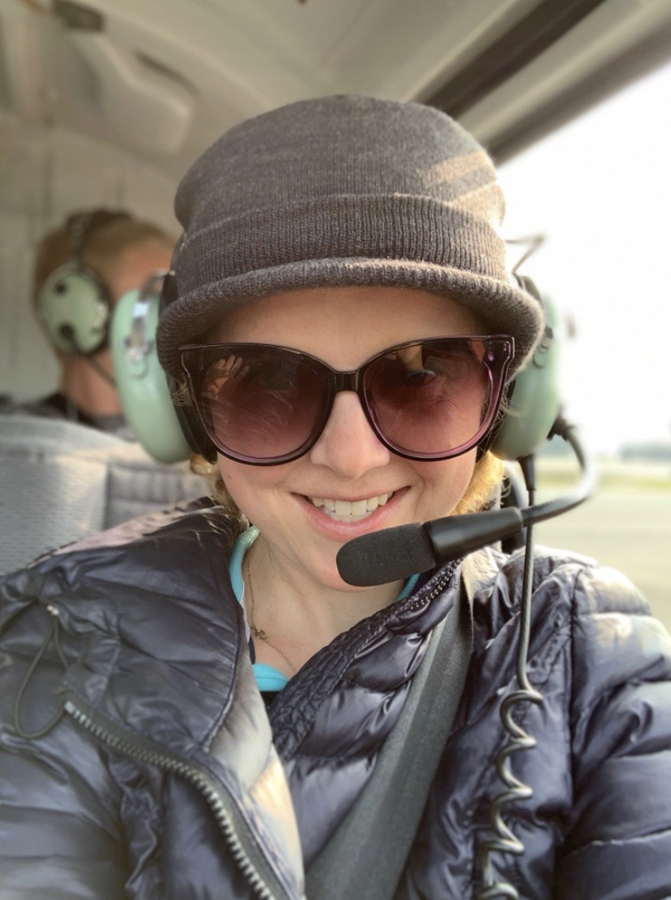
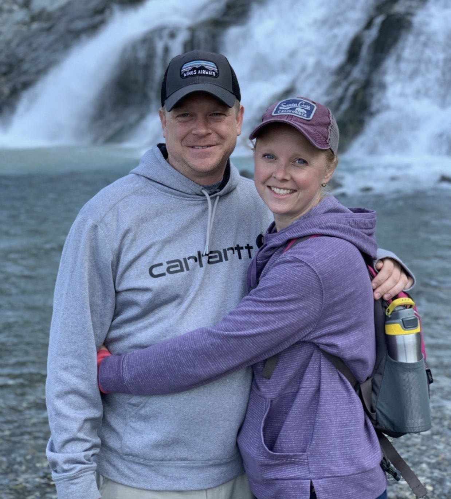
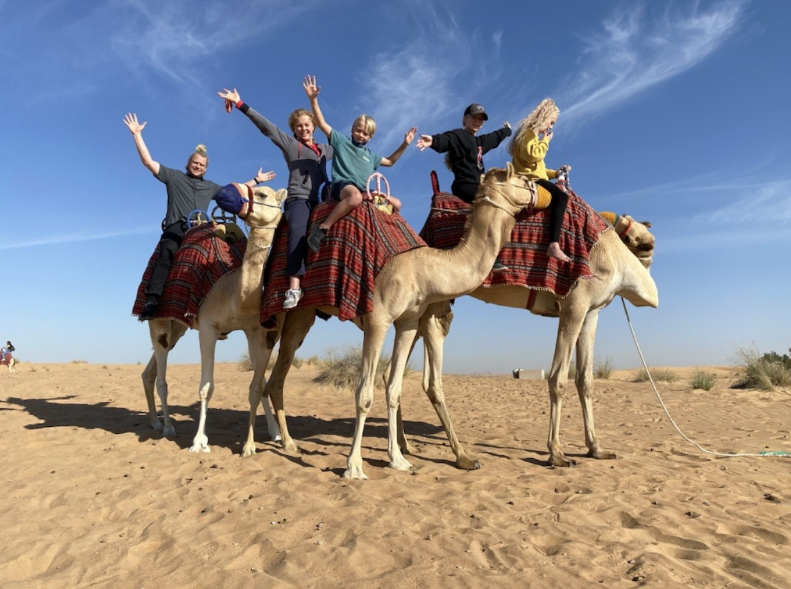
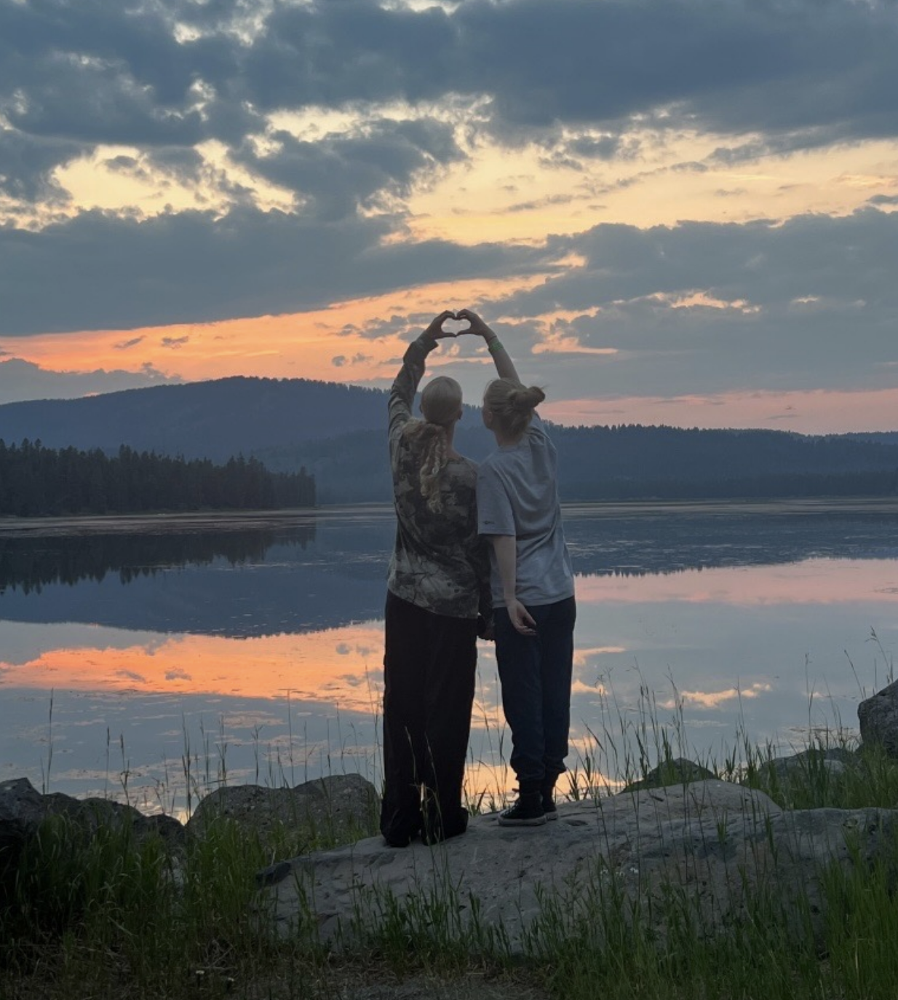

My family and how we started...
I grew up in a home where my parents loved art and loved learning. My dad is an avid reader and my mom is a brilliant artist. When I was in middle school, my dad also became an artist and our home was always full of books and beautiful things. Jason grew up here, in a home where his mom could connect with any human and taught her kids how to make friends and find joy in life. His dad taught him business principles and how to build and invest in the future. So here we are, two people who love people and life and learning and all the beauty those things have to offer.
Raising our own family, we have traveled the world and lived all over the country. Time in Seattle and Chicago broadened our access to all of these things--incredible libraries, and independent book stores only fed my love for books, and theatre and art and the bustle of the big city further deepened our love for culture and prosperous economy. Traveling to foreign lands has broadened our appreciation for all that the world has to offer and a desire to make some of that wonder available even in the little town of Rexburg.
We have five kids; Sophia (18), Naomi (16), Jep (13), Jace (10) and Trey (7). Raising them has been our greatest challenge and our greatest joy. They are intelligent, kind, funny, head-strong, and full of promise for the future. Walking beside them as they learn and grow has been an adventure of loving and adapting to everyone's needs. When they were small, I found a great love for picture books and began growing a collection of favorites to fill many shelves of our own. For Valentine's day each year I give them each a new book, often a picture book with beautiful illustrations or a meaningful message. For Christmas a few years ago, they each picked out a picture book for me and presented them to me on Christmas morning. It's one of my favorite memories. They have been excited and supportive of this book store idea from the beginning, offering their opinions and ideas as we've brainstormed names for the store and started the process of planning. They are all anxious to see it open and have jobs there (even though most of them are still too young to work there yet). What else do you want to know? We like to ride bikes and travel and hike and play video games. Jason and Naomi have gotten certified in scuba diving and love to get in the ocean whenever they can. My kids have been involved in lacrosse, track, football, baseball, basketball, tennis, figure skating, volleyball, rock climbing, martial arts, and soccer. We've had kids with supporting roles and lead roles in musicals throughout the years, and collectively we all love Hamilton.

We also love Porsches and my husband has taken us to drive on the track in Utah for the past several years. I love good dark chocolate, yoga, tulips in the Spring, pumpkins in the fall and Halloween. I hope to someday get a pilot's license and spend some time up in the sky. Hopefully sooner rather than later. We all love when Jason grills on his Traeger. Our favorites are ribs, chili, steak and wings. We enjoy making homemade ice cream occasionally and homemade pizza, and always love a good movie with popcorn. Hawaii holds lots of good memories for us of sandy beaches and beautiful sunsets and family time together. Oh, and Andy Grammer, he's our favorite.
